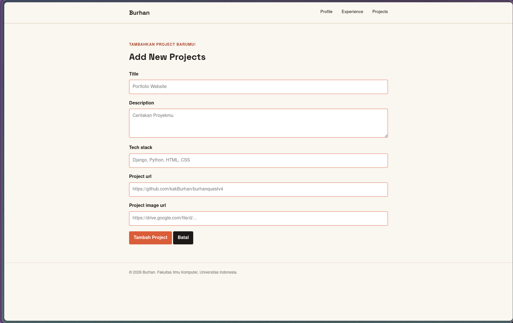
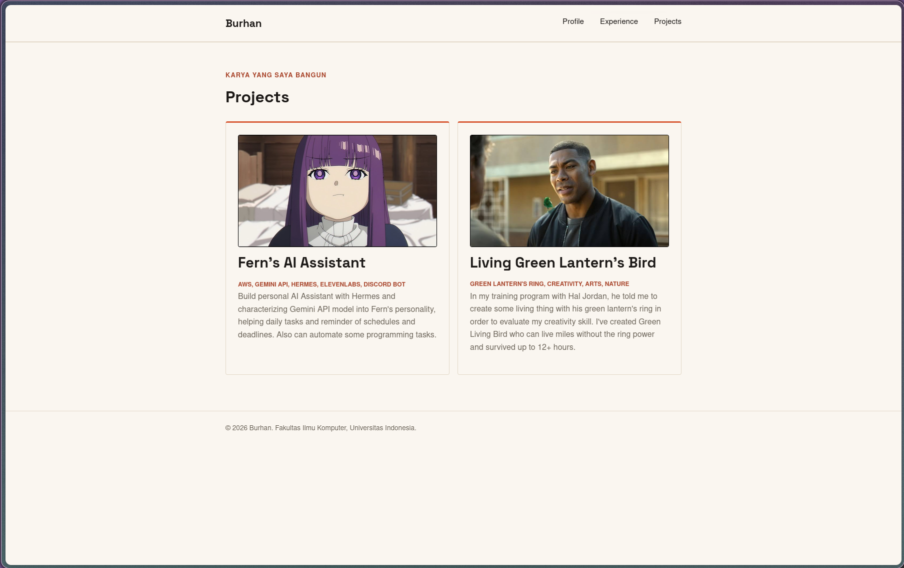
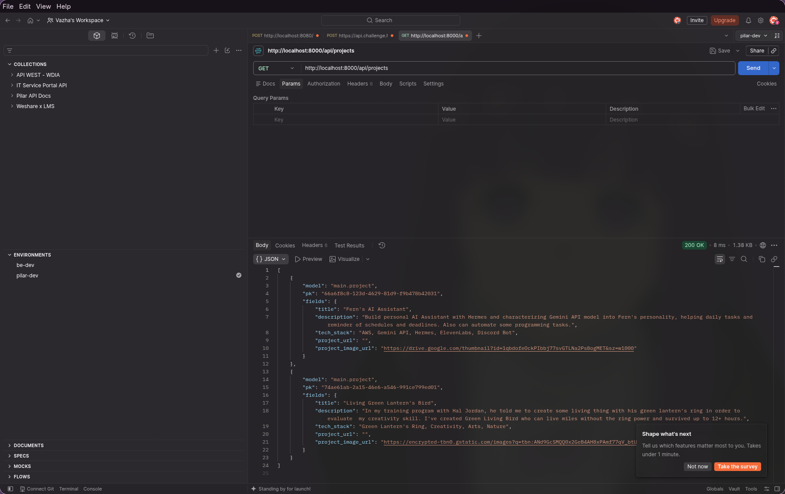
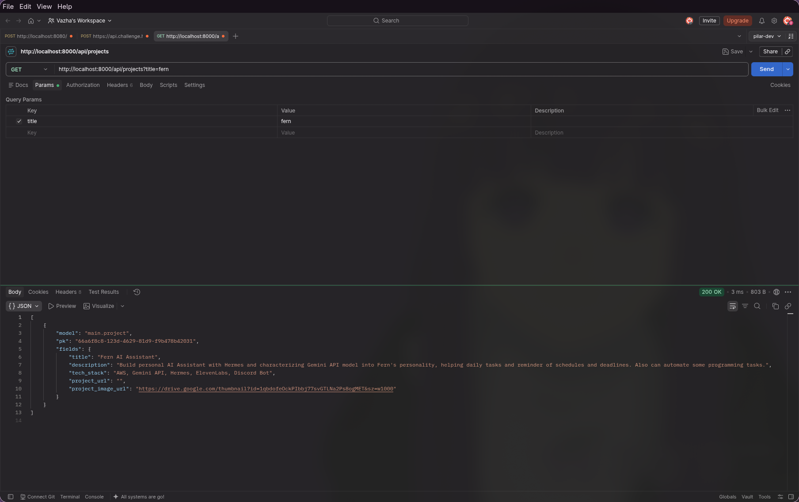
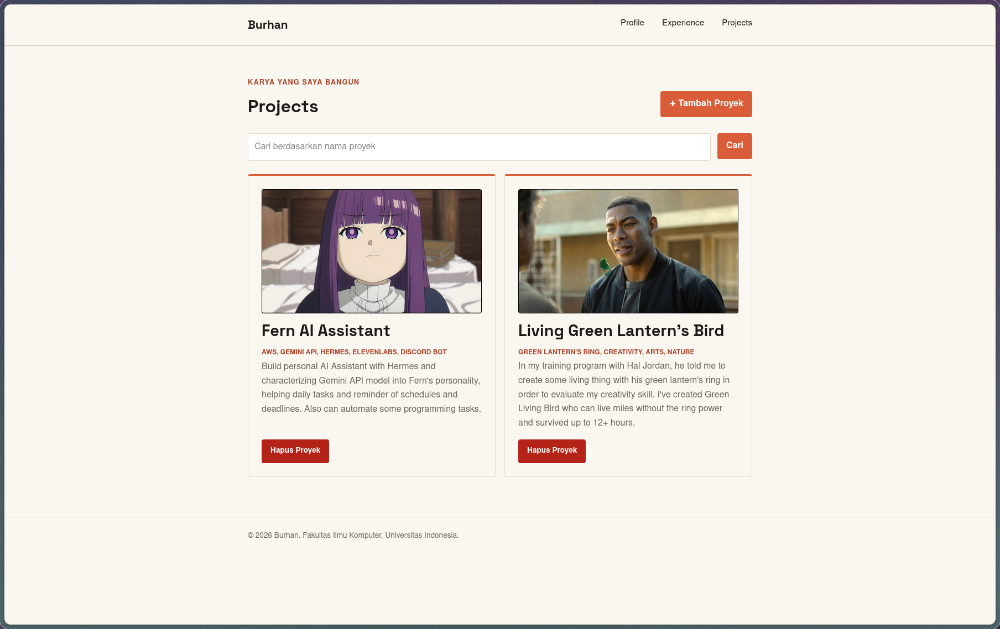

Tutorial 03: Form dan Data Delivery
Tutorial 03: Form dan Data Delivery
Pemrograman Berbasis Platform (CSGE602022) - diselenggarakan oleh Fakultas Ilmu Komputer Universitas Indonesia, Semester Gasal 2026/2027
Kontributor: FERN - Vazha Khayri, EHW - Evan Haryo Widodo, DUH - Bermulya Anugrah Putra
Tujuan Pembelajaran
Setelah menyelesaikan tutorial ini, mahasiswa diharapkan untuk dapat:
- Mengetahui konsep data delivery menggunakan XML dan JSON.
- Memahami struktur, perbedaan format, dan cara membaca data dalam bentuk XML dan JSON.
Tutorial ini adalah prasyarat wajib untuk Individual Assignment minggu ini - jika Tutorial ini belum diselesaikan, Individual Assignment tersebut tidak akan dinilai. Deadline Tutorial 03 adalah Rabu, 16 September 2026; deadline Individual Assignment 3 adalah Senin, 21 September 2026. Lihat halaman Jadwal untuk tanggal lengkap.
Tutorial ini adalah Tutorial 03, lanjutan langsung dari Tutorial 02 - tutorial keempat dari proyek yang akan kamu bangun berkelanjutan sepanjang semester: sebuah website portofolio pribadi. Semua tutorial berikutnya akan melanjutkan langsung dari hasil tutorial ini, jadi pastikan proyekmu berjalan dengan baik sebelum lanjut ke tutorial berikutnya.
Sepanjang tutorial ini, contoh yang dipakai adalah portofolio milik Burhan, maskot mata kuliah PBP. Setiap kali ada bagian yang berisi data pribadi Burhan (nama, NPM, bio, foto), akan ada catatan eksplisit yang bilang “ganti ini dengan data kamu sendiri” - jangan sampai kelewat.
Yang Sudah Kita Bangun Sejauh Ini - Di Tutorial 2, kamu memindahkan data profil yang masih ditulis langsung di HTML ke dalam context dan membuat halaman Experience yang mengambil data dari model.
Pada tutorial ini, kita akan mempelajari konsep Data Delivery menggunakan XML dan JSON, sebagai fondasi sebelum kita mengimplementasikannya pada proyek myportofolio.
Pengenalan Data Delivery
Dalam mengembangkan suatu platform web atau perangkat lunak modern, ada kalanya kita perlu mengirimkan data dari satu stack ke stack lainnya (misalnya dari backend server ke frontend client, atau dari satu layanan web ke layanan web lainnya).
Data yang dikirimkan bisa bermacam-macam bentuknya. Beberapa format penyajian data yang umum digunakan antara lain HTML, XML, dan JSON. Implementasi data delivery dalam bentuk HTML yang dirender oleh server sudah kamu pelajari pada tutorial sebelumnya. Pada bagian ini, kita akan berfokus pada dua format populer lainnya: XML dan JSON.
XML (Extensible Markup Language)
XML (eXtensible Markup Language) adalah sebuah format teks yang dirancang agar mudah dimengerti hanya dengan membacanya, karena setiap elemen dalam XML mendeskripsikan dirinya sendiri (self-descriptive). XML banyak digunakan dalam berbagai aplikasi web dan mobile generasi terdahulu maupun sistem enterprise untuk tujuan penyimpanan dan pertukaran data.
File XML hanya berisi data yang dikemas dalam tag tertentu. Untuk dapat mengirim, menerima, menyimpan, atau menampilkan informasi dari file tersebut, kita perlu membuat program yang dapat memproses strukturnya.
Contoh Format XML:
<?xml version="1.0" encoding="UTF-8"?>
<person>
<name>Burhan</name>
<age>25</age>
<address>
<street>Jl. PeBePe No.1</street>
<city>Depok</city>
<province>Jawa Barat</province>
<zip>16424</zip>
</address>
</person>XML di atas sangatlah self-descriptive: - Ada informasi nama (name) - Ada informasi umur (age) - Ada informasi alamat (address) yang bersarang (nested), mencakup: - jalan (street) - kota (city) - provinsi (province) - kode pos (zip)
Dokumen XML membentuk struktur hierarki seperti tree yang dimulai dari elemen root, lalu ke cabang (branch), hingga berakhir pada daun (leaves). Dokumen XML harus mengandung sebuah root element yang merupakan induk (parent) dari elemen lainnya. Pada contoh di atas, <person> adalah root element.
Baris <?xml version="1.0" encoding="UTF-8"?> disebut sebagai XML Prolog. Prolog ini bersifat opsional, tetapi jika ada, posisinya harus berada paling awal di dokumen. Pada dokumen XML, semua elemen wajib memiliki closing tag. Tag pada XML juga bersifat case sensitive, sehingga tag <person> dianggap berbeda dengan tag <Person>.
JSON (JavaScript Object Notation)
JSON (JavaScript Object Notation) adalah sebuah format pertukaran data ringan yang sangat populer saat ini. Seperti XML, JSON dirancang agar mudah dimengerti manusia (karena juga bersifat self-describing) dan mudah di-parsing atau di-generate oleh mesin.
Meskipun sintaks JSON berasal dari notasi objek bahasa pemrograman JavaScript, JSON sebenarnya adalah format teks murni yang independen terhadap bahasa. Hampir seluruh bahasa pemrograman modern memiliki dukungan bawaan (built-in) untuk membaca dan membuat struktur JSON.
Contoh format JSON:
{
"name": "Burhan",
"age": 25,
"address": {
"street": "Jl. PeBePe No.1",
"city": "Depok",
"province": "Jawa Barat",
"zip": "16424"
}
}Data pada JSON direpresentasikan dalam bentuk pasangan key dan value (kunci-nilai). Pada contoh di atas, yang menjadi key adalah "name", "age", dan "address". Value pada JSON dapat berupa tipe data primitif (string, number, boolean, null), himpunan (array), ataupun sekumpulan pasangan key-value lain (berupa objek bersarang/ nested object).
Saat ini, JSON lebih disukai dibandingkan XML pada aplikasi modern (terutama pada arsitektur RESTful API) karena ukurannya yang lebih ringkas, parser yang sangat cepat, dan integrasi yang sangat natural dengan JavaScript di sisi frontend.
Menghubungkan ke Proyek Kamu - Pemahaman mengenai XML dan JSON adalah langkah awal yang esensial agar aplikasi portofolio yang kamu bangun dapat berkomunikasi dengan sistem lain. Seiring dengan berkembangnya kompleksitas proyekmu, aplikasi tidak lagi sekadar mengembalikan dokumen HTML utuh. Kamu akan dihadapkan pada kebutuhan untuk menyediakan data mentah (seperti JSON) yang dapat diproses secara asinkronus, misalnya melalui AJAX, untuk meningkatkan interaktivitas pada sisi frontend.
Pre-Tutorial Notes
Sebelum melanjutkan tutorial 2 ini, kami mengharapkan kamu memastikan hal-hal berikut di bawah ini:
Jika tidak sengaja push file sensitif seperti
.env,.env.prod,db.sqlite3, atau folderenv/, hapus dari Git menggunakan:git rm --cached .env .env.prod db.sqlite3 git rm -r --cached env/Catatan: Perintah di atas menghapus file sensitif dari tracking Git ke depannya.
Cek apakah
.gitignoresudah berisi file sensitif tersebut:cat .gitignoreJika belum ada, tambahkan ke
.gitignore:.env* db.sqlite3 env/Kemudian buat commit clean up:
git add . git commit -m "cleanup"Dengan demikian, kita dapat meminimalisasi risiko keamanan dari credential yang ter-expose di repository publik.
Struktur direktori myportofolio
myportofolio ├── env/ ├── .git/ ├── .gitignore ├── requirements.txt ├── db.sqlite3 ├── manage.py ├── portofolio │ ├── migrations │ ├── __init__.py │ ├── admin.py │ ├── apps.py │ ├── models.py │ ├── tests.py │ ├── urls.py │ ├── views.py ├── portofolio # folder konfigurasi utama proyek │ ├── __init__.py │ ├── asgi.py │ ├── settings.py # semua konfigurasi proyek ada di sini │ ├── urls.py # daftar routing URL │ ├── views.py │ └── wsgi.py ├── requirements.txt ├── static │ ├── css │ │ └── style.css │ └── img │ └── burhan.png └── templates └── index.html └── experience.html
Jika ada tambahan atau perubahan minor pada struktur folder yang kamu lakukan pada tugas 1, tidak masalah, ya! Perubahan minor yang dimaksud adalah adanya penambahan file, seperti html, css, .png, atau sejenisnya yang digunakan untuk menyajikan informasi pada halaman web
Tutorial: Implementasi Skeleton Sebagai Kerangka Utama Tampilan Web
Sebelum kita masuk ke materi utama, yakni pembuatan form, kita perlu membuat suatu skeleton yang berfungsi sebagai kerangka utama tampilan halaman situs web kita. Pembuatan skeleton ini bertujuan untuk memastikan bahwa desain situs web kita selalu konsisten dan memperkecil kemungkinan terjadinya redundansi kode. Cara pembuatan skeleton ini, adalah
Buat berkas base.html pada direktori templates yang berada pada direktori utama (root folder). Berkas base.html ini berfungsi sebagai template dasar yang digunakan sebagai kerangka umum untuk halaman web lainnya yang berada pada setiap aplikasi.
Di dalam base.html, letakkan
{% load static %}di bagian paling atas untuk memuat setiap static files yang didefinisikan pada berkas html{% load static %} <!DOCTYPE html> <html lang="en"> <head> <meta charset="UTF-8" /> <meta name="viewport" content="width=device-width, initial-scale=1.0" /> </head> </html>Letakkan setiap package yang akan sering digunakan di dalam
<head>. Lalu, tambahkan{% block meta %}{% endblock meta %}yang berguna untuk menambahkan metadata lainnya pada berkas html lain yang melakukan extend pada kerangka ini. Berikut contoh isinya:<head> <meta charset="UTF-8" /> <meta name="viewport" content="width=device-width, initial-scale=1.0" /> <link rel="preconnect" href="https://fonts.googleapis.com"> <link rel="preconnect" href="https://fonts.gstatic.com" crossorigin> <link href="https://fonts.googleapis.com/css2?family=Space+Grotesk:wght@500;700&display=swap" rel="stylesheet"> <link rel="stylesheet" href="/static/css/style.css"> {% block meta %} {% endblock meta %} </head>Pindahkan
<header>yang berguna untuk pembuatan navbar dan<footer>yang berguna untuk pembuatan footer pada halaman web pada berkas index.html, lalu letakkan di dalam<body>pada berkas base.html. Setelah itu, pada<body>di berkas base.html, tambahkan{% block content %}{% endblock %}pada tag body yang nantinya berguna untuk mengisi konten untuk halaman webnya.<body> <header class="site-header"> <div class="container"> <a href="{% url 'main:show_main' %}" class="brand">{{ name }}</a> <nav> <a href="{% url 'main:show_main' %}">Profile</a> <a href="{% url 'main:show_experience' %}">Experience</a> <a href="{% url 'main:show_projects' %}">Projects</a> </nav> </div> </header> {% block content %} {% endblock content %} <footer class="site-footer"> <div class="container"> <p>© 2026 {{ name }}. Fakultas Ilmu Komputer, Universitas Indonesia.</p> </div> </footer> </body>Buka settings.py yang ada pada direktori proyek (portofolio) dan carilah variabel
TEMPLATES. Sesuaikan kode yang ada dengan potongan kode berikut agar berkas base.html terdeteksi sebagai berkas template.... TEMPLATES = [ { 'BACKEND': 'django.template.backends.django.DjangoTemplates', 'DIRS': [BASE_DIR / 'templates'], # Tambahkan konten baris ini 'APP_DIRS': True, ... } ] ...
Dalam beberapa kasus, APP_DIRS pada konfigurasi TEMPLATES kamu dapat bernilai False. Apabila nilainya False, kamu wajib mengubahnya menjadi True. Hal ini dilakukan agar templates milik aplikasi (contohnya main) lebih diprioritaskan daripada admin/base_site.html milik django.contrib.admin. Untuk informasi lebih lanjut, kamu dapat mengakses halaman ini.
Pada berkas index.html yang berada di direktori templates, ubahlah kode index.html dengan memasukkan setiap tag html pada body ke dalam block content. Contohnya sebagai berikut,
{% extends 'base.html' %} {% block content %} <main> <section class="hero" id="profile"> <div class="container hero-grid"> <div class="hero-identity"> <p class="hero-kicker">Computer Science · Universitas Indonesia</p> <h1>{{ name }}</h1> </div> <div class="hero-photo"> <div class="photo-block"></div> <img class="avatar" src="/static/img/burhan.png" alt="Photo of {{ name }}"> </div> <div class="hero-details"> <p class="bio">{{ bio }}</p> <dl class="meta-list"> <div class="meta-row"> <dt>NPM</dt> <dd>{{ npm }}</dd> </div> <div class="meta-row"> <dt>Program</dt> <dd>{{ study_program }}</dd> </div> </dl> <ul class="skills"> <li>Programming Fundamentals</li> <li>Java</li> <li>Python</li> <li>Data Structures</li> <li>Teaching & Mentoring</li> </ul> <div class="social-links"> <a href="https://github.com/" class="social-link">GitHub</a> <a href="https://linkedin.com/" class="social-link">LinkedIn</a> <a href="mailto:burhan@example.com" class="social-link">Email</a> </div> </div> </div> </section> ... </main> {% endblock content %}Jika diperhatikan, berkas index.html yang sebelumnya melakukan pendefinisian html dari awal, sekarang hanya berisi kontennya saja. Hal ini dikarenakan berkas index.html melakukan extend terhadap base.html yang menjadi kerangka utama dari struktur html pada halaman web
Baris-baris yang dikurung dalam {% ... %} disebut dengan template tags Django. Baris-baris inilah yang akan berfungsi untuk memuat data secara dinamis dari Django ke HTML.
Pada contoh diatas, tag {% block %} di Django digunakan untuk mendefinisikan area dalam template yang dapat diganti oleh template turunan. Template turunan akan extend template dasar, pada contoh ini base.html dan mengganti konten di dalam block tersebut sesuai kebutuhan.
Sekarang, kalian boleh menerapkan hal yang sama pada berkas html lainnya, seperti index.html yang melakukan extend base.html (template utama) agar meminimalisir terjadinya redundansi kode.
Tutorial: Implementasi Form & Data Delivery
Data delivery melibatkan kebutuhan untuk berkomunikasi antar client yang biasanya merupakan antarmuka yang dilihat pengguna dan server yang biasanya adalah backend yang mengelola database, pada implementasi kali ini, kita akan memanfaatkan library Form yang telah disediakan oleh Django untuk mengirim data ke server atau biasanya disebut request dan menangkap balasan dari server atau biasanya disebut response.
Important Acknowledgment - Kode dan implementasi yang akan saya jelaskan adalah contoh, sesuaikan object dan fields dengan hasil dari tugas 2 anda, jangan melakukan kopi paste secara langsung tanpa adjustment jika object dan fields yang anda buat pada tugas 2 berbeda!
Langkah 1: Implementasi Form
Pada tugas 2, kamu diminta untuk membuat satu page untuk portfoliomu antara lain proyek, pendidikan, sertifikasi, atau bagian lain yang relevan. Kali ini, kita akan membuat konten tersebut dinamis. Pada tutorial ini saya akan menggunakan proyek sebagai contoh, tapi kalian bisa menyesuaikan dari apa yang telah dibaut di tutorial 2.
Pastikan kamu telah memiliki models untuk bagian baru dan sudah melakukan migration, disini konteksnya adalah project, seperti berikut:
class Project(models.Model):
id = models.UUIDField(primary_key=True, default=uuid.uuid4, editable=False)
title = models.CharField(max_length=255)
description = models.TextField()
tech_stack = models.CharField(max_length=255)
project_url = models.URLField(blank=True)
project_image_url = models.URLField(blank=True, max_length=500)
def __str__(self):
return self.titlePada main/ kita akan membuat file baru bernama forms.py dan buat class ProjectForm:
from django.forms import ModelForm, TextInput, Textarea, URLInput
from main.models import Project
class ProjectForm(ModelForm):
class Meta:
model = Project
fields = [
"title",
"description",
"tech_stack",
"project_url",
"project_image_url",
]
labels = {
"title": "Nama Proyek",
"description": "Deskripsi Proyek",
"tech_stack": "Teknologi yang Digunakan",
"project_url": "URL Proyek",
"project_image_url": "URL Gambar Proyek",
}
widgets = {
"title": TextInput(
attrs={
"class": "form-input",
"placeholder": "Portfolio Website",
"maxlength": 255,
}
),
"description": Textarea(
attrs={
"class": "form-input",
"placeholder": "Ceritakan Proyekmu",
"rows": 3,
}
),
"tech_stack": TextInput(
attrs={
"class": "form-input",
"placeholder": "Django, Python, HTML, CSS",
}
),
"project_url": URLInput(
attrs={
"class": "form-input",
"placeholder": "https://github.com/kakBurhan/burhanquestv4",
}
),
"project_image_url": URLInput(
attrs={
"class": "form-input",
"placeholder": "https://drive.google.com/thumbnail?id=...&sz=w1000",
}
),
}ModelForm adalah builtins library yang telah disediakan oleh Django untuk membuat boilerplate suatu form. Struktur dari form sendiri dapat dikustomasi menggunakan metadata atau class Meta.
Boilerplate dalam dunia pemrogramman adalah istilah bagi kode standar yang sifatnya reusable dengan sedikit/tidak ada perubahan.
Penjelasan Kode
modeldigunakan untuk menentukan model Django yang menjadi sumber data dan struktur dariModelForm. Field pada form akan dibuat berdasarkan field yang terdapat pada model tersebut.fieldsdigunakan untuk menentukan field model yang ingin ditampilkan pada form. Field dapat ditulis secara eksplisit, seperti["title", "description"], atau menggunakan"__all__"untuk menampilkan seluruh field yang tersedia.widgetsdigunakan untuk mengatur tampilan dan jenis elemen HTML yang digunakan oleh setiap field pada form. Pada kode di atas,TextInputdigunakan untuk field teks satu baris,Textareadigunakan untuk field deskripsi yang membutuhkan area teks lebih besar, danURLInputdigunakan untuk field yang berisi URL. Atribut di dalamattrs, seperticlass,placeholder,maxlength, danrows, digunakan untuk mengatur styling, teks petunjuk, batas jumlah karakter, serta tinggi area input.
Setelah membuat Form, kita perlu membuat views untuk nantiya dapat menggunakan form tersebut. pergi ke main/views.py lalu buat fungsi berikut:
def create_project(request):
form = ProjectForm(request.POST or None)
if request.method == "POST" and form.is_valid():
form.save()
messages.success(request, "Proyek baru berhasil ditambahkan!")
return redirect("main:show_projects")
context = {
"name": "Burhan",
"form": form,
}
return render(request, "projects_form.html", context)
Penjelasan Kode
ProjectForm(request.POST or None)digunakan untuk mentrigger classProjectFormdenganrequest.POSTyang nantinya akan dikirim dengan tag HTML yaitu<form method="post">form.save()digunakan untuk menyimpan value yang telah dimasukkan pengguna lewat form ke database.messages.success(request, ...)digunakan untuk mengirim pesan ke client untuk dapat ditampilkan.redirect("main:show_projects")akan berjalan setelah form berhasil disimpan, halaman website akan diarahkan ke halaman projects yang bisa dilihat.
Lalu, pergi ke urls.py, tambahkan hal berikut:
from main.views import (
...
create_project
)
urlpatterns = [
...
path("projects/add/", create_project, name="create_project"),
]Sekarang kita akan membuat tampilan dari halaman Project Form, buat file baru pada folder templates, yaitu projects_form.html, isi dengan kode berikut:
{% extends "base.html" %}
{% block meta %}
<title>Add Project - {{ name }}</title>
{% endblock meta %}
{% block content %}
<main>
<section class="experience-section">
<div class="container">
<h1>Add New Projects</h1>
<form method="post"
action="{% url 'main:create_project' %}"
class="project-form">
{% csrf_token %}
{% for field in form %}
<div class="form-group">
<label for="{{ field.id_for_label }}">{{ field.label }}</label>
{{ field }}
{% for error in field.errors %}
<p class="form-error">{{ error }}</p>
{% endfor %}
</div>
{% endfor %}
<button type="submit" class="button">Tambah Project</button>
<a href="{% url 'main:show_projects' %}" class="button button-secondary">Batal</a>
</form>
</div>
</section>
</main>
{% endblock content %}Dan pada style.css:
.project-form {
width: 100%;
max-width: 100%;
margin-top: 1.5rem;
}
.form-group {
margin-bottom: 1.25rem;
}
.form-group label {
display: block;
margin-bottom: 0.4rem;
font-weight: 700;
}
.form-group input,
.form-group textarea {
width: 100%;
box-sizing: border-box;
padding: 0.7rem;
border: 1px solid var(--accent);
border-radius: var(--radius);
font: inherit;
transition:
border-color 0.2s ease,
outline-color 0.2s ease;
}
.form-group input:focus,
.form-group textarea:focus {
outline: 2px solid var(--accent);
border-color: var(--accent);
}
.form-error {
color: #b42318;
font-size: 0.85rem;
margin-top: 0.35rem;
}
.button {
display: inline-block;
height: fit-content;
border: 0;
border-radius: var(--radius);
padding: 0.65rem 1rem;
background: var(--accent);
color: white;
cursor: pointer;
font: inherit;
font-weight: 700;
text-decoration: none;
}
.button-secondary {
background: var(--ink);
}Jika sudah, kalian dapat menjalankan django, dan masuk ke URL dengan route /projects/add. Tampilan jika berhasil akan seperti berikut:

Google Drive Link
Jika kamu ingin menambahkan gambar pada project, upload gambar tersebut ke Google Drive terlebih dahulu. Setelah itu, klik kanan pada gambar, pilih Share, lalu ubah aksesnya menjadi Anyone with the link sebagai Viewer.
Gunakan ID file dari link Google Drive tersebut untuk membuat URL thumbnail dengan format berikut:
https://drive.google.com/thumbnail?id=FILE_ID&sz=w1000Sebagai contoh, jika link Google Drive yang kamu miliki adalah:
https://drive.google.com/file/d/1qbdofeOckPIbbj77svGTLNa2Ps8ogMET/view?usp=sharingMaka URL gambar yang dimasukkan ke form adalah:
https://drive.google.com/thumbnail?id=1qbdofeOckPIbbj77svGTLNa2Ps8ogMET&sz=w1000Pastikan kamu memasukkan URL thumbnail tersebut ke field Project image url pada form.
Langkah 2: Menyesuaikan dengan Tugas 2
Setelah tugas 2, kamu diharapkan memiliki page HTML baru, disini sebagai contoh, saya telah memiliki project.html, isi kodenya adalah sebagai berikut:
<!DOCTYPE html>
<html lang="en">
<head>
<meta charset="UTF-8">
<meta name="viewport" content="width=device-width, initial-scale=1.0">
<title>Projects - {{ name }}</title>
<link rel="preconnect" href="https://fonts.googleapis.com">
<link rel="preconnect" href="https://fonts.gstatic.com" crossorigin>
<link href="https://fonts.googleapis.com/css2?family=Space+Grotesk:wght@500;700&display=swap" rel="stylesheet">
<link rel="stylesheet" href="/static/css/style.css">
</head>
<body>
<header class="site-header">
<div class="container">
<a href="{% url 'main:show_main' %}" class="brand">{{ name }}</a>
<nav>
<a href="{% url 'main:show_main' %}">Profile</a>
<a href="{% url 'main:show_experience' %}">Experience</a>
<a href="{% url 'main:show_projects' %}">Projects</a>
</nav>
</div>
</header>
<main>
<section class="experience-section" id="experience">
<div class="container">
<p class="section-kicker">Karya yang saya bangun</p>
<h1>Projects</h1>
<div class="experience-grid">
{% for project in project_list %}
<article class="experience-card">
<span class="experience-category">{{ project.tech_stack }}</span>
<h2>{{ project.title }}</h2>
<p class="experience-description">{{ project.description }}</p>
{% if project.project_url %}
<p class="experience-status">
<a href="{{ project.project_url }}">Lihat proyek</a>
</p>
{% endif %}
</article>
{% empty %}
<p class="empty-state">
Belum ada proyek yang ditambahkan.
</p>
{% endfor %}
</div>
</div>
</section>
</main>
<footer class="site-footer">
<div class="container">
<p>© 2026 {{ name }}. Fakultas Ilmu Komputer, Universitas Indonesia.</p>
</div>
</footer>
</body>
</html>Karena kita sudah membuat kerangka pada base.html, sekarang kita tinggal extends base html tersebut dengan project.html agar elemen elemen seperti Navbar dan Footer dapat ditampilkan tanpa dibuat dua kali (redundant).
{% extends "base.html" %}
{% block meta %}
<title>Projects - {{ name }}</title>
{% endblock meta %}
{% block content %}
<! -- Isi HTML kamu -- >
{% endblock content %}Isi konten dengan html dari project.html yang dimulai dari tag <main> dan keseluruhan isi konten pada tag tersebut. Tag diluar main tidak perlu kita tulis kembali karena telah diimplementasikan pada base.html dan kita hanya tinggal extend saja seperti inheritance.
Lalu pada main/views.py saya telah melakukan implementasi seperti ini:
...
def show_projects(request):
context = {
"name": "Burhan",
"project_list": Project.objects.all(),
}
return render(request, "project.html", context)dan pada main/urls.py seperti ini:
from django.urls import path
from main.views import show_main, show_experience, show_projects
app_name = "main"
urlpatterns = [
path("", show_main, name="show_main"),
path("experience/", show_experience, name="show_experience"),
path("projects/", show_projects, name="show_projects"),
]Cek kembali apakah kode pada portfolio kamu memiliki struktur yang serupa agar memudahkan dalam mengikuti implementasi berikutnya!
Langkah 3: Implementasi Data Delivery dengan JSON
Jika kamu belum membuat project apapun, kamu bisa masuk ke /projects/add dan menambahkan project-project yang diinginkan. Atau mengikuti contoh project yang dibuat pada tutorial dengan masuk ke dengan field content sebagai berikut:
[
{
"title": "Fern AI Assistant",
"description": "Build personal AI Assistant with Hermes and characterizing Gemini API model into Fern's personality, helping daily tasks and reminder of schedules and
deadlines. Also can automate some programming tasks.",
"tech_stack": "AWS, Gemini API, Hermes, ElevenLabs, Discord Bot",
"project_url": "",
"project_image_url": "https://drive.google.com/thumbnail?id=1qbdofeOckPIbbj77svGTLNa2Ps8ogMET&sz=w1000",
},
{
"id": uuid.UUID("74ae61ab-2a15-46e6-a546-991ce799ed01"),
"title": "Living Green Lantern's Bird",
"description": "In my training program with Hal Jordan, he told me to create some living thing with his green lantern's ring in order to evaluate my creativity skill.
I've created Green Living Bird who can live miles without the ring power and survived up to 12+ hours.",
"tech_stack": "Green Lantern's Ring, Creativity, Arts, Nature",
"project_url": "",
"project_image_url": "https://encrypted-tbn0.gstatic.com/images?q=tbn:ANd9GcSMQQ0x2GeB4AH8xPAmf77qV_btUQyVb24Y56R4z2g3YA&s=10",
}
]Sebagai gambaran, tampilan awal dari halaman projects yang saya buat adalah sebagai berikut:

Sekarang kita akan merubah data delivery yang ada fungsi show_projects yang awalnya langsung mengambil dari database, menjadi menggunakan JSON. pada main/views.py buat fungsi get_projects_json:
def get_projects_json(request):
title_query = request.GET.get("title", "").strip()
projects = Project.objects.all()
if title_query:
projects = projects.filter(title__icontains=title_query)
projects_json = serializers.serialize("json", projects)
return HttpResponse(projects_json, content_type="application/json")Penjelasan Kode
request.GET.get("title", "").strip()Mengambil query yang ditulis pada parameter, biasanya akan terlihat seperti/example?title=HelloWorld.serializers.serialize("json", projects)Mengubah objectprojectsmenjadi format JSON.HttpResponse(projects_json, content_type="application/json")mengembalikan output dari suatu fungsi sebagai respons HTTP untuk dikirim ke client.
Gimana Cara Melihat Implementasi Fungsi yang Dipanggil dari Library?
- Neovim, kalian bisa mengarahkan kursor ke fungsi yang ingin diidentifikasi, lalu ketik
gd, nanti akan diarahkan ke isi dari implementasi fungsi tersebut. - VScode, kalian bisa menekan
Ctrl, lalu klik fungsi yang ingin diidentifikasi - IDE Lain, cari di google hehe.
FUNFACT: Kenapa Harus HttpResponse? - Server memiliki cara untuk berkomunikasi dengan website, dan cara yang terstandarisasi dengan protokol HTTP, protokol HTTP merupakan protokol standar untuk berinteraksi (request and response) antara server dengan client (web browser), methode interaksinya biasanya menggunakan GET, POST, PUT, PATCH, & DELETE. Terdapat metode interaksi lain seperti Websocket, SMTP, dan lainnya yang akan kalian pelajari di jarkom :D.
Pada urls.py, daftarkan fungsi get_projects_json yang telah dibuat pada urlpatterns. Saya menulis seperti ini path("api/projects/", get_projects_json, name="get_projects_json"), penggunaan /api sebagai notasi untuk membedakan mana endpoint yang digunakan oleh client, mana yang digunakan oleh server.
Setelah kamu mendaftarakn ke urls.py, kita dapat memanggilnya dalam bentuk API menggunakan Postman.


Bagaimana Kalau Formatnya XML? - Kontrak tidak harus JSON, salah satu contoh kontrak lainnya adalah XML, coba kalian ubah serializenya dari yang “json” ke “xml” dan content_type="application/xml" dan lihat response yang diberikan seperti apa
Setelah berhasil, kita coba ubah implementasi dari fungsi show_projects seolah olah menerima response berupa JSON dan di deserialize untuk menjadikan tipe data yang dikenali python
def show_projects(request):
json_response = get_projects_json(request)
projects = serializers.deserialize(
"json",
json_response.content.decode("utf-8"),
)
projects = [project.object for project in projects]
title_query = request.GET.get("title", "").strip()
context = {
"name": "Burhan",
"project_list": projects,
"title_query": title_query,
}
return render(request, "project.html", context)Inti dari kode diatas adalah merubah implementasi yang awalnya langsung mengambil dari database, sekarang mengambil dari JSON terlebih dahulu, lalu di deserialize agar formatnya sesuai dengan tipedata python, lalu dikirim lagi ke halaman project.html.
Terlihat redundant? Memang! - Karena ini adalah contoh implementasi yang seharusnya dilakukan ketika kalian ingin mengimplementasikan aplikasi yang memiliki client dan server dengan repository yang berbeda atau implementasi menggunakan fetch() javascript.
Sebelum kita mengimplementasikan semua fungsi ini ke client, saya ingin membuat fungsi delete_projects terlebih dahulu untuk memudahkan nantinya untuk menghapus project. Implementasi pada main/views.py
def delete_project(request, project_id):
project = get_object_or_404(Project, pk=project_id)
if request.method == "POST":
project.delete()
messages.success(request, "Project berhasil dihapus!")
return redirect("main:show_projects")
return redirect("main:show_projects")Tambahkan path ini pada urlpatterns di main/urls.py yaitu: path("projects/<uuid:project_id>/delete/",delete_project,name="delete_project")
Sekarang, pada folder templates, buat folder components/ dan tambahkan file bernama project_delete_modal.html:
<p class="experience-status">
<button type="button"
class="button button-danger"
popovertarget="delete-project-{{ project.id }}"
aria-label="Hapus {{ project.title }}"
title="Hapus proyek">
Hapus Proyek
</button>
</p>
<div id="delete-project-{{ project.id }}"
class="project-delete-modal"
popover="auto"
role="dialog"
aria-modal="true"
aria-labelledby="delete-project-title-{{ project.id }}">
<button type="button"
class="project-delete-modal__backdrop"
popovertarget="delete-project-{{ project.id }}"
popovertargetaction="hide"
aria-label="Tutup konfirmasi hapus"></button>
<div class="project-delete-modal__content">
<button type="button"
class="project-delete-modal__close"
popovertarget="delete-project-{{ project.id }}"
popovertargetaction="hide"
aria-label="Tutup konfirmasi hapus">×</button>
<h2 id="delete-project-title-{{ project.id }}">Hapus Projek?</h2>
<p>
Apakah Anda yakin ingin menghapus
<strong>{{ project.title }}</strong>?
</p>
<div class="project-delete-modal__actions">
<button type="button"
class="button button-secondary"
popovertarget="delete-project-{{ project.id }}"
popovertargetaction="hide">Batal</button>
<form method="post" action="{% url 'main:delete_project' project.id %}">
{% csrf_token %}
<button type="submit" class="button button-danger">Ya, Hapus</button>
</form>
</div>
</div>
</div>Dan ubah isi dari project.html menjadi seperti berikut:
{% extends "base.html" %}
{% block meta %}
<title>Projects - {{ name }}</title>
{% endblock meta %}
{% block content %}
<main>
<section class="experience-section" id="experience">
<div class="container">
<p class="section-kicker">Karya yang saya bangun</p>
<div class="project-header">
<h1>Projects</h1>
<a href="{% url 'main:create_project' %}"
class="button project-add-button">
<span aria-hidden="true">+</span>
Tambah Proyek
</a>
</div>
<form method="get"
action="{% url 'main:show_projects' %}"
class="project-search">
<input type="search"
name="title"
value="{{ title_query }}"
placeholder="Cari berdasarkan nama proyek"
class="project-search__input"
aria-label="Cari berdasarkan nama proyek">
<button type="submit" class="button">Cari</button>
</form>
<div class="experience-grid project-grid">
{% for project in project_list %}
<article class="experience-card">
{% if project.project_image_url %}
<img src="{{ project.project_image_url }}"
alt="Gambar {{ project.title }}"
class="project-image">
{% endif %}
<h2>{{ project.title }}</h2>
<span class="experience-category">{{ project.tech_stack }}</span>
<p class="experience-description">{{ project.description }}</p>
<div class="project-card-actions">
<div class="project-actions">
{% if project.project_url %}
<a href="{{ project.project_url }}" class="button">Lihat Project</a>
{% endif %}
{% include "components/project_delete_modal.html" with project=project %}
</div>
</div>
</article>
{% empty %}
{% if title_query %}
<p class="empty-state">Tidak ada proyek dengan nama tersebut.</p>
{% else %}
<p class="empty-state">Belum ada proyek yang ditambahkan.</p>
{% endif %}
{% endfor %}
</div>
</div>
</section>
</main>
{% endblock content %}Serta perubahan pada style.css adalah sebagai berikut:
...
/* projects */
.project-header {
width: 100%;
display: flex;
justify-content: space-between;
align-items: center;
gap: 1rem;
margin-bottom: 1.5rem;
}
.project-grid {
grid-template-columns: repeat(2, minmax(0, 1fr));
}
.project-grid .experience-card {
display: flex;
flex-direction: column;
}
.project-image {
display: block;
width: 100%;
height: auto;
border: 1px solid black;
border-radius: var(--radius);
}
.project-header h1 {
margin-bottom: 0;
}
.project-add-button {
display: inline-flex;
align-items: center;
gap: 0.45rem;
}
.project-add-button span {
font-size: 1.25rem;
line-height: 1;
}
.project-search {
display: flex;
gap: 0.75rem;
margin-bottom: 1.5rem;
}
.project-search__input {
width: 100%;
min-width: 0;
padding: 0.7rem;
border: 1px solid var(--line);
border-radius: var(--radius);
background: #fff;
color: var(--ink);
font: inherit;
}
.project-search__input:focus {
outline: 2px solid var(--accent);
border-color: var(--accent);
}
.project-actions {
display: flex;
align-items: center;
flex-wrap: wrap;
gap: 20px;
margin-top: 1rem;
}
.project-actions .button {
font-size: 0.85rem;
font-weight: 600;
}
.project-card-actions {
display: flex;
flex-direction: column;
margin-top: auto;
}
.hide {
display: none !important;
}
.project-actions .experience-status {
margin-top: 0;
}
.project-delete-modal {
display: none;
position: fixed;
inset: 0;
width: 100%;
height: 100%;
max-width: none;
max-height: none;
margin: 0;
padding: 1rem;
border: 0;
background: transparent;
z-index: 10;
align-items: center;
justify-content: center;
}
.project-delete-modal:popover-open {
display: flex;
}
.project-delete-modal__backdrop {
position: absolute;
inset: 0;
width: 100%;
height: 100%;
border: 0;
padding: 0;
background: rgba(28, 25, 23, 0.58);
cursor: default;
}
.project-delete-modal__content {
position: relative;
z-index: 1;
width: min(100%, 480px);
padding: 1.5rem;
background: var(--paper);
border: 1px solid var(--line);
border-radius: var(--radius);
box-shadow: 0 1rem 3rem rgba(28, 25, 23, 0.22);
}
.project-delete-modal__content h2 {
margin: 0 0 0.75rem;
font-family:
"Space Grotesk",
-apple-system,
sans-serif;
font-size: 1.5rem;
}
.project-delete-modal__close {
position: absolute;
top: 1rem;
right: 1rem;
border: 0;
padding: 0;
background: transparent;
color: var(--text-muted);
font-size: 1.8rem;
line-height: 1;
cursor: pointer;
}
.project-delete-modal__actions {
display: flex;
justify-content: flex-end;
gap: 0.75rem;
margin-top: 1.5rem;
}
@media (max-width: 600px) {
.project-header {
align-items: flex-start;
flex-direction: column;
}
.project-add-button {
width: 100%;
justify-content: center;
}
.project-search {
flex-direction: column;
}
.project-search .button {
width: 100%;
}
.project-delete-modal {
align-items: flex-end;
padding: 0;
}
.project-delete-modal__content {
width: 100%;
padding: 1.25rem;
border-radius: var(--radius) var(--radius) 0 0;
}
.project-delete-modal__actions {
flex-direction: column-reverse;
}
.project-delete-modal__actions .button {
width: 100%;
text-align: center;
}
}Tampilan akhir dari page /projects/ adalah sebagai berikut:

Coba tambahkan project-project kamu, jika berhasil selamat! Jika masih gagal, coba debug yaa.. :D
Orang Lain Bisa Edit Portfolio-mu! - Karena kita belum mempelajari terkait Autentikasi, Session, & Cookies. Technically yes, semua orang bisa mengotak-atik portfolio kamu. Kalau kamu mau mengamankannya untuk sementara, coba implementasikan request header yang memiliki kode rahasia, hanya kamu yang bisa tahu.
HINTS:
- buat kode rahasia di .env dan cocokkan dengan header ketika melakukan request.
- Untuk form, karena tidak bisa membuat custom header tanpa javascript, tambahkan field password
Pengumpulan
Tutorial ini dikumpulkan lewat slot submisi yang disediakan di SCELE, dalam bentuk tautan ke commit (bukan sekadar tautan repositori) di GitHub yang menunjukkan hasil akhir Tutorial ini, di-push sebelum tenggat waktu di atas. Commit yang di-push setelah tenggat waktu tidak akan diterima, sehingga Tutorial ini dianggap belum selesai dan Individual Assignment minggu ini tidak akan dinilai. Pastikan juga repositori GitHub kamu bersifat publik, supaya asisten dosen bisa mengaksesnya.
Referensi Tambahan
Tutorial 03: Form dan Data Delivery – PBP Gasal 2026/2027
Tutorial 03: Form dan Data Delivery – PBP Gasal 2026/2027
Tutorial 03: Form dan Data Delivery – PBP Gasal 2026/2027
PBP Gasal 2026/2027